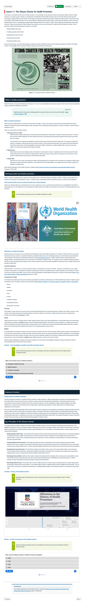
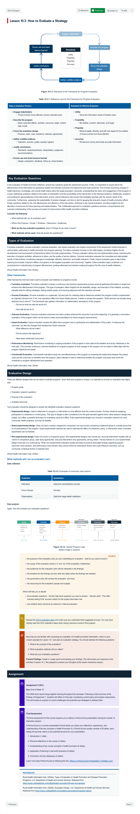

Course Description
In this course, you'll explore the theory and practice of health promotion, and its relationship with health service management. We will cover a wide array of topics, and build skills essential for effective health promotion practitioners. Beginning with foundational concepts in health promotion and the Ottawa Charter, we will explore the social determinants of health, models of behaviour change, and strategies for health promotion in various settings, including schools, indigenous communities, and the occupational health and safety setting. We will highlight the importance of community engagement, co-design, and monitoring and evaluation in health promotion planning and implementation. Additionally, we debate the role of health service managers in reorienting health systems towards prevention and enhancing population health and wellbeing. Through reflective practice and critical analysis, you will develop a deep understanding of the complexities of health promotion and its impact on individuals and communities. By the end of your learning, you will feel equipped with the knowledge, skills, and perspectives necessary for effective and impactful practice in health promotion and health service management.
Learning Outcomes
- Evaluate and critique major approaches to health promotion (e.g. policy, behaviour change, community engagement, advocacy and social marketing).
- Critically explain the historical, social and political context of major health promotion programs and theories, including the Ottawa Charter.
- Apply major approaches to health promotion policy and theory to contemporary public health issues such as alcohol consumption, problem gambling and obesity.
- Critically assess the applicability of major health promotion theories and strategies in vulnerable communities, including persons of low socio-economic status, Indigenous Australians, and refugees.
- Identify and describe the key challenges facing health promotion programs in both developed and developing country context.
Learning Experience
Topics
- Key Concepts in Health Promotion
- The Social Determinants of Health
- Models and Challenges of Behaviour Change
- Strategies in Health Promotion
- Community Engagement and Co-Design
- Health Promotion in Aboriginal Communities
- Settings Based Approaches to Health Promotion
- Health Promotion in the Occupational Health and Safety Setting
- Health Promotion Planning
- Health Promotion Monitoring and Evaluation
- Health Promotion and the Health System
Development Team

Andrew Gardner
Course Author
Lead
Carmel Williams
Course Author
Contributer
Scott Hanson-Easey
Course Author
Contributer

Simon Nagy
Learning Designer
Lead
Dalestair Kidd
Digital Education Developer
Lead

Viviana Zuluaga
Digital Education Developer
Collaborator
Assessments
-
Quiz
Multiple Choice Questions
In this task learners are tested on their knowledge about health promotion and disease prevention frameworks, health education and behaviour change theories, and factors that influence effective implementation of health promotion programs.
15%
-
Essay
Essay
Learners are asked to describe and critique major approaches to health promotion related to a specific condition for a one particular population. They must also describe the evidence based approaches that could be implemented to address the health issue they have identified. They should include consideration of alignment with strategic health priorities, Aboriginal and Torres Strait Islander relevance and impact, equity issues, community partnership and engagement as well as communication and evaluation of the proposed program.
35%
-
Report
Report
For this task learners reflect on their health promotions proposal considering current policy and program approaches. This will include an analysis of current challenges and potential new strategies to address them.
35%
-
Presentation
Media Task
Learners are required to deliver a Pecha Kucha presentation, concise presentation format, where they share their reflections, experiences, and understanding of the key concepts in the course.
15%
Snapshots


Learning Resources
-
Timeline - History of the Ottawa Charter
-
Stanford Cardiovascular Disease Prevention Programs
Carmel Williams and Scott Hanson-Easey discuss the importance and relevance of the Stanford Cardiovascular Disease Prevention Programs for health promotion practice:
-
Arnstein's Ladder

-
HPS Framework

-
Total Worker Health model and Hierarchy of Controls

-
Characteristics of a walkable environment